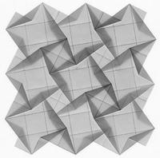
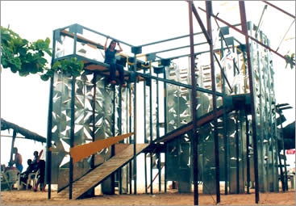
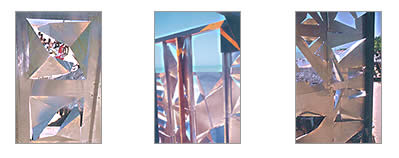

Teselas Obra de Travesía a Monte Pascoal, 2000  La tesela se estudia en el taller (se parte en presentación, desde el mundo otomano) desde su virtud de repetición coherente y cuya ley es el recubrimiento del plano euclídeo sin huecos ni solapamientos, donde es preciso tener en el pulso la simultaneidad del dentro y del fuera, de lo que se termina y lo que comienza, de la figura que es periódica y cuya forma automodifica su propio calce con la otras, que son iguales. Debe rimar su belleza interna con su condición de vínculo. Se podría decir que es un canto a la continuidad. En el taller, los alumnos parten a la ciudad a observar el recorrido de la luz durante el día en un determinado lugar y a partir de una invención que toma este máximo de luces, elaborar una tesela - luz. Se estudia, también, el acto del agua; del lavado de pies al interior de la mezquita; y en la ciudad, el modo de habitar con el agua y sus distintas magnitudes, como el agua doméstica y como el agua urbana, como el agua corriente y como el agua aquietada, como el agua útil y como el agua ornamental. Los alumnos construyen una tesela que recibe este escurrir y este apozarse del agua construyendo su demora desde la belleza del brillo y del reflejo.  Relación de la gráfica con la arquitectura en la obra: la relación de la luz - lineatura. A partir de esta materia se aborda la obra de travesía. Cada alumno se hace cargo de la elaboración de una tesela para cubrir con otras, los muros de la obra. Son teselas de aluminio construidas con cortes y pliegues.  Esta tesela - celosía cuida tanto su luz individual como su virtud de recibir otra luz; el aluminio trae lo otro, el color contiguo en el reflejo y el sol lejano en el brillo; se trató de una experiencia 1 a 1 de este pulso doble que construye con lo que toca y también con el eco de lo que no toca. |